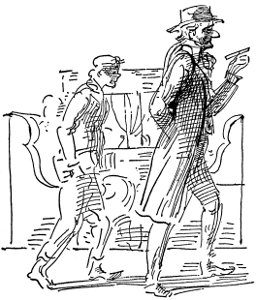

Koşun, dinleyin
Koşun, dinleyin
Koşun, dinleyin
Michigan Federal Yasama Meclisi'nde yaptığı konuşmada emekli vali Hazen S. Pingree söz alarak şöyle dedi: Sorumlular ve yasama yetkisini elinde tutanlar şimdi var olan eşitsizlik düzenini değiştirmezlerse bu yüce ülkemizde, çeyrek yüzyıldan kısa bir sürede kanlı bir devrim olacağını şimdiden ileri sürüyorum.
carnegıe kendi mezar taşındaki yazıyı anlattı
Aleksandr Ragtime Topluluğu
En iyisi
En iyisi
fizik laboratuvarında verilen öğle yemeği yeniliklerle doluydu. Bir metre yükseklikteki minyatür yüksek fırın şölen masasının üzerindeydi, on iki metre boyunda dekovil hattı masanın çevresini dolaşıyordu. Yüksek fırın, raylardaki vagonlara erimiş maden yerine sıcak konyak döküyordu. Sunulan dondurma demiryolu traversi, ekmekse lokomotif biçimindeydi.
Her tür eğitim dalı içinde yükseköğrenimin üstünlüklerini öven Mr. Carnegie şu sonuca vardı: El işçiliğinin, beynin en yüce çalışması için en iyi temeli oluşturduğu anlaşılmıştır.
genel müdür yardımcısı bankayı boşalttı
Koşun dinleyin
Aleksandr Ragtime Topluluğu
En iyisi
En iyisi
Jesse James'in kardeşi, filmde tren soyguncusu, haydut, yasa kaçağı olarak gösterilmesinin ahlaka aykırı olduğunu ileri sürdü Salt Lake papazlarının yaptığı araştırmaya göre Mormonlar arasında uygulanmakta olan birden çok kadınla evlenme savaşı bölgede kazanıldı kadın derneklerinin soluğu kesildi
Ülkenin en iyi topluluğudur bu
sirk hayvanlarının yalnız Chicago at etini yedikleri söylendi Indiana satış vergileri Dünya Fuarı'nın sonunun geldiğini gösterdi iktisadi patlama bayrağı paçavra gibi kullanıyor yamyam adalarında öldürüldü bakıcı suya düştü ve denizaslanlarının saldırısına uğradı.
Her an üzerine düşüp Santos Dumont'u boğma tehlikesi yaratan havada yarı sönmüş durumda asılı balonla sandal geldi. Santos yarı çekilerek yarı tırmanarak küpeştesini aşıp içine girdi.
Monako Prensi, yata getirilmesine, kurulanmasına ve üstünün değiştirilmesine izin vermesini istedi. Santos Dumont, kurtarılabilecek her şey kıyıya taşınana dek sandaldan ayrılmadı, sonra da sırılsıklam ama gülümseyerek, aldırmazlık içinde, kalabalığın coşkulu çığlıkları arasında karaya çıktı.
Sine-göz (3)
O qu'il a des beaux yeux[3] dedi karşıda oturan hanım ama O çocuklarla böyle konuşulmayacağını söyledi küçük oğlan tepeden tırnağa ateş bastığını yapış yapış olduğunu duydu ama alacakaranlıktı yarım kavun biçimi lambanın ışığı soluk kırmızıydı tren sarsıldı ansızın uyku bastırdı kapkaranlık ve mavi püskül sallanıyor kavun biçimi kara abajurun ucunda her yerde sipsivri kıvrımlı gölgeler (ilk geldiğinde O adam kavun getirdi uzun dantel perdelerden içeri güneş giriyordu kestiğimizde kavun kokusu tüm odayı kapladı) Yoo çekirdeklerini yeme güzelim apandisit olursun
ama pencereden gizlice bakıyorsun ansızın bodur bacalarla dizi dizi simsiyah gümbürdeyen karanlığa korkuyorsun kara dumandan kısa bacalardan fışkırıp sönen alev toplarından Çömlekçiler güzelim gece boyu orda çalışırlar Kim çalışır orada gece boyu? işçiler onlar gibi çalışanlar acı çekenler Meksikalılar
korkmuştun
ama şimdi yine karanlık simsiyah trendeki lambanın gökyüzünün her şeyin üzerinde karamavi gölge var O anlatıyor bir öykü
Evvelzamaniçinde Dünyapanayırındanönce Sendoğmadanönce Meksika'ya gittiler yeni uluslararası hatta özel vagonla derken adamlar trenin arkasından vurdular ceylanı kocaman tavşanları eşektavşanı dediler onlara bir keresinde de bir gece Evvelzamaniçinde Dünyapanayırındanönce Sendoğmadanönce bir gece anne öylesine korkmuştu ki patlayan tüfeklerden ama her şey yolundaydı küçük bir avdan başka şey olmadığı anlaşıldı bir Meksikalı'yı öldürüyorlardı o kadar
çok eskidendi
İnsanlık Tutkunu
Debs demiryolu işçisiydi, Terre Haute'da tahta kulübede doğdu.
On kardeşten biriydi.
Babası '49'da gemiyle Amerika'ya gelmişti,
Colmar kentinden bir Alsace'lı; para kazanmaya pek aldırdığı yoktu, müziği, okumayı severdi,
çocuklarına ilkokulu bitirme olanağı sağladı, onlar için elinden gelen tek şey de buydu.
Daha on beşinde Gene Debs Indianapolis Terre Haute Demiryolları'nda makinistlik yapıyordu.
Lokomotif ateşçisi olarak çalıştı,
bir dükkânda tezgâhtar oldu,
yerel Lokomotif Ateşçileri Birliği'ne katıldı, yazman seçildi, işçileri örgütlemek için tüm ülkeyi dolaştı.
Uzun boyluydu, ayaklarını sürüyerek yürürdü, çam tahtası kaplı salonlarda işçileri coşturan ateşli konuşmalar yapardı
onlara kendi özlediği dünyayı isteten
kardeşlerin olacak dünyayı
herkesin eşit bölüşeceği dünyayı:
Ben işçi önderi değilim. Ne benim ne de başkasının ardından gitmenizi istiyorum. Sizi bu kapitalist vahşetten çıkarıp götürecek Musa arıyorsanız olduğunuz yerde kalacaksınız. Elimden gelse bile sizi o vaat edilmiş topraklara götürmezdim; çünkü sizi oraya ben götürürsem başkası gerisin geriye oradan çıkarabilir.
İşte marşandizcilerle, ateşçilerle, makasçılarla, makinistlerle böyle konuşuyordu, onlara demiryolu işçilerini örgütlemenin yeterli olmadığını, tüm işçileri örgütlemek gerektiğini, tüm işçilerin ortak konfederasyonda örgütlenmesi gerektiğini söylüyordu.
Lokomotif ateşçisiydi bir sürü uzun gece yolculuğunda
dumanlar arasında bir ateş yakardı onu, çamtahtası kaplı salonları döven ateşli sözcüklerde tutuşan; kardeşlerinin özgür olmasını istiyordu.
Pullman grevinden sonra kapatıldığı hücreden çıktığında Eski Wells Caddesi İstasyonu'nda kendisini karşılayan kalabalıkta işte bunu görüyordu,
bin dokuz yüz on ikide ona dokuz yüz bin oy veren insanlardı bunlar. Sosyalist başkan karabasanıyla redingotluları, silindir şapkalıları, pırlantalı hanımları korkutanlardı, Saratoga Kaplıcaları'nda, Cenevre Gölü'nde, Bar Limanını'nda.
Ama Gene Debs'in kardeşleri nerelerdeydi bin dokuz yüz on dokuzda Woodrow Wilson savaşa karşı çıkan konuşmalar yaptığı için Atlanta'da onu tutuklattığı zaman,
nerelerdeydi viski seven, birbirlerini seven iriyarı adamlar, Ortabatı'daki küçük kasaba barlarında usulca dağınık öyküler anlatan,
içinde tembel tembel dolaşacakları sundurmalı ev, yemek pişirecek şişman bir karı, içki ve puro, çapalayacakları bahçe, çene çalacakları bir kafadar isteyen sessiz adamlar,
ve bunun için çalışmak isteyen
ve başkalarının da bunun için çalışmasını isteyen;
nerelerdeydi lokomotif ateşçileri, makinistler, onu Atlanta Mapusu'na tıktıkları zaman?
Ve onu Terre Haute'a geri getirdiler, orada ölsün diye,
ağzında puroyla salıncaklı iskemlesine otursun sundurmada,
yanına karısı bir kap içinde kızıl Amerikan Gülleri koysun diye;
Terre Haute halkı, Indiana halkı, Ortabatı halkı onu seviyordu, ondan korkuyordu, onun kendilerini seven yaşlı, incelikli bir amca olduğunu düşünüyorlar, yanında olmayı, kendilerine şekerlemeler vermesini istiyorlardı,
ama ondan korkuyorlardı, sanki zührevi hastalığı varmış gibi, frengiliymiş ya da cüzamlıymış gibi ve bunun çok kötü olduğunu düşünüyorlardı,
ama bayrak adına
refah adına
yeryüzünde demokrasiyi güvence altına almak adına,
onun yanında olmaya korktular,
korktular onu çok fazla düşünmekten, inanmak korkusuyla;
çünkü demişti ki:
Yoksul bir sınıf olduğu sürece ben onun parçasıyım, suçlu bir sınıf olduğu sürece ben onun parçasıyım, tutuklu tek kişi bile varsa ben özgür değilim.
Sine-göz (4)
gümbürdeyen arabada yağmurun içinden geri geri giderken bu dört tekerleklinin titrek ışığında o ikisinin yüzüne bakarken Kadının koca sandıkları tavanı dövüp dururken Adamın avukat sesi Othello okurken
Babası severdi beni, sık sık çağırırdı,
Başımdan geçenleri sorardı hep
Yılı yılına, katıldığım savaşları, kuşatmaları,
Geçirdiğim serüvenleri.
Ben de taa çocukluğumdan başlar
Anlatırdım bir bir istediği ana değin:
Korkunç olayları, heyecan verici kazaları
Karada ve denizde; kaç kez
Nasıl kıl payı kurtulduğumu ölümden.
Aaaa işte Schuylkill arnavutkaldırımından sonra dümdüz ıslak asfaltta atların nalları keskin sesler çıkarıyor yağmurun gri çubukları arasından kışın çamuruyla al al donuk parıldıyor ırmak Senin yaşındayken Jack bu köprüden daldım köprünün parmaklıklarından soğuk yağmurla donuk donuk titreyen ırmağa bakabiliriz Üzerinde giysin var mıydı? Yalnızca gömleğim
Mac
Kalabalık trende, kapıya yakın yerdeydi Fainy; önünde duran, kayışa tutunmuş şişman adamın sırtında, buruşuk, su lekeli kâğıda yazılmış mektubu boyuna baştan okuyordu:
Gerçek Arayıcı Yazın Dağıtım Anonim Şirketi
Genel Merkez 1104 Hamlin Caddesi
Chicago, 111. 14 Nisan 1904
Fenian O'H. McCreary
456 N. Wood Caddesi
Chicago, 111.
sayın bay,
10 Nisan tarihli mektubunuzu aldık.
Söz konusu işle ilgili olarak kişisel görüşmeden büyük yararlar sağlanacağını düşünüyoruz. 16 Nisan Pazartesi günü, saat dokuzda yukarıdaki adrese gelmek inceliğini gösterirseniz, sanıyoruz, başvurmuş olduğunuz işe uygun olup olmadığınız bütünüyle anlaşılabilir.
Saygılar, Gerçeği arayan
emmanuel r. bıngham.
Fainy korkuyordu. Tren istasyona çok çabuk varmıştı. İki sokak yürümesi için daha on beş dakikası vardı. Dükkânların vitrinlerine bakarak aylak aylak dolaştı. Doldurulmuş hayvanlar satan dükkânda içi doldurulmuş, altın sarısı bir sülün duruyordu; onun üzerinde, testere gibi gagasından etiket sallanan büyük, yassı, yeşilimsi bir balık asılıydı:
TESTEREBALIĞI (Pristis perrotetti)
Körfezlerde ve Florida sularında yaşar. Sığ körfezlere,
iç sulara gider.
Belki de hiç gitmeyecekti. Vitrinin arkasında vaşak, öte yanındaysa kesik kuyruklu kedi vardı, ikisi de birer ağaç dalında duruyordu. Ansızın soluğunu tuttu. Geç kalacaktı. Apar topar koşturmaya başladı.
Dördüncü kata vardığında soluk soluğaydı, yüreği yerinden fırlayacakmış gibi atıyordu. Sahanlıkta buzlucamdan kapıları inceledi.
EVRENSEL İLİŞKİ ŞİRKETİ
F. W. Perkins
Sigorta
RÜZGÂRLI KENT BÜYÜ VE YENİLİKLER
ŞİRKETİ
Dr. Noble
Hastane ve Hasta Odası Gereçleri
Sonuncusu tuvaletin arkasında pis bir kapıydı. Harflerin yaldızı dökülmüştü, ama çerçevelerinden okumayı başardı:
GENEL DONANIM VE TİCARET ŞİRKETİ
Sonra kapının yanında, duvarda, üzerine meşale tutan el çizilmiş bir kart gördü; üzerinde şunlar yazılıydı: ‘Gerçek Arayıcı Şirket.' Korkuyla camı tıklattı. Yanıt alamadı, yineledi.
“Girin . . . Vurmayın,” dedi derin bir ses. Fainy kapıyı açıp, iki büyük yazı masasının tümden doldurduğu karanlık, dar odaya girerken kekelemekte olduğunu gördü.
“Lütfen, efendim. Mr. Bingham'ı görmeye gelmiştim de.”
Tek camın önündeki öteki masada, kocaman düşük çenesinin av köpeği havası verdiği iriyarı bir adam oturmuştu. Kara saçları uzundu, kulaklarının üzerinde kıvrılmıştı, ensesinde geniş, kara fötr şapka vardı, iskemlesinde arkaya kaykılıp Fainy'yi tepeden tırnağa süzdü.
“Nasılsın genç dostum? Bu sabah ne tür kitaplar alma eğilimindesin? Ne yapabilirim senin için bu sabah?” diye gürledi.
“Siz Mr. Bingham mısınız, efendim?”
“Evet, tam önünüzde duruyor Doc Bingham.”
“Şey, efendim, şu iş için gelmiştim de . . .”
Doc Bingham'ın yüzündeki anlam değişti. Ekşi bir şey tatmış gibi ağzını buruşturdu. Döner iskemlesinde şöyle dönüp köşede duran pirinç tükürük hokkasına tükürdü. Sonra yine Fainy'ye dönüp şişko parmağını salladı. “Genç dostum, tecrübe sözcüğünü nasıl yazarsın?”
“T . . .e . . .c . . .r . . .i . . .”
“Yeter . . . Eğitimin yok . . . Ben de öyle sanıyordum . . . Ne kültür var ne de uygar adamı vahşilerin ilkelliğinden ayıran incelikli duygular . . . Ne gerçeği bulma coşkusu ne karanlıklara ışık tutma coşkusu . . . Anlıyor musun genç dostum, sana sunduğum iş değil, büyük bir olanak . . . hizmet etmek, kendini geliştirmek için çok hoş bir olanak. Ben sana parasız eğitim öneriyorum.”
Fainy, ayak değiştirdi. Boğazına bir şey tıkanmıştı.
“İş matbaacılıkla ilgiliyse sanırım yapabilirim.”
“Şimdi seni sorguya çekerken sakın aklından çıkarma büyük bir olanağın eşiğinde durduğunu.”
Doc Bingham masasının gözlerini uzun süre karıştırdı, bir puro buldu, ucunu kopardı, yaktı, boyuna ayak değiştirmekte olan Fainy'ye döndü yine.
“Pekâlâ, adını söyler misin?”
“Fenian O'Hara McCreary . . .”
“Hımm . . . İskoçyalı ve İrlandalı . . . oldukça iyi bir karışım . . . benim de aslım budur.”
“Ya dinin?”
Fainy kıvrandı. “Babam Katolik'ti ama . . .” Kıpkırmızı kesildi.
Doc Bingham gülüp ellerini ovuşturdu.
“Ah, din, ne suçlar işlenmiştir senin adına. Ben inançsızım . . . dostlarım arasında ne sınıfa aldırırım ne inanca; ama kimi zaman da oğlum, durumu idare etmelisin . . . Hayır, bayım, benim Tanrım gerçektir, namuslu insanların ellerinde durmadan yükselerek, bilgisizlik, açgözlülük sislerini dağıtacak olan, insanlığa özgürlük, bilgi getirecek olan gerçek . . . Bana katılıyor musun?”
“Dayımın yanında çalışıyordum. Sosyal demokrattır.”
“Ah, öfkeli gençlik . . . At arabası kullanabilir misin?”
“Şey, evet efendim, sanırım.”
“Öyleyse seni işe almamam için hiç neden yok.”
“Tribune'deki ilanda haftada on beş dolar deniyordu.”
Doc Bingham'ın sesi kadife gibi yumuşayıverdi.
“Elbette, Fenian, evladım, haftada on beş dolar en az kazancın olacak . . . Hiç ortak çalışma yöntemi diye bir şey duydun mu? İşte benim yanımda böyle çalışacaksın . . . Gerçek Arayıcı Şirketi'nin tek sahibi, temsilcisi olarak burada, benim elimde insan bilgisinin ve çabasının her sözcüğünü kapsayan görkemli bir küçük kitaplar, kitapçıklar dizisi var . . . Hemen şimdi tüm ülkeyi içine alacak satış kampanyasına başlıyorum. Sen de benim dağıtıcılarımdan biri olacaksın. Kitaplar on sentle elli sent arasında satılacak. Her on sentlik kitaptan bir sent, her elli sentlikten beş sent kazanacaksın . . .”
“Yani her hafta para almayacak mıyım?” diye kekeledi Fenian.
“Metelikleri düşünüp, milyonları göz ardı edecek kadar salak mısın? Üç beş kuruşu güvence altına almak için hayatında karşına çıkan bu en görkemli olanağı bir yana mı iteceksin? Yoo, hayır, ateşli gözlerinde, İrlanda tarihinden gelme başkaldıran adında coşkulu, kararlı bir genç olduğunu görüyorum senin . . . Anlaştık mı? Öyleyse tokalaşalım, Fenian, aslanım, hiç pişman olmayacaksın.”
Doc Bingham ayağa fırlayıp Fenian'ın eline sarıldı, sıktı.
“Şimdi, Fenian, gel benimle. Önce hazırlık olarak gidilecek önemli bir yerimiz var.” Doc Bingham şapkasını başına çekti, sonra da merdivenleri inip kapıya vardılar; iriyarı bir adamdı, yürüdükçe yağlar üzerinden gevşek gevşek sarkıyordu. Her neyse, iş iştir, dedi Fainy kendi kendine.
Önce terziye gittiler. Doc Bingham'ın Lee dediği uzun burunlu, sarışın adam onları karşılamak için ayaklarını sürüyerek dışarı çıktı. Terzi dükkânı, buharlı kumaş ve temizleme suyu kokuyordu. Lee, damaksızmış gibi konuşuyordu.
“Nahıl da hahtaaım,” dedi. “Bihnernen dolahm vehdimmm dohtoa, iyilefemedimm.”
“Her zaman senin yanındayım, biliyorsun bunu Lee.”
“Helpette, ama bana çok bohcun vah.”
Dr. Emmanuel Bingham göz ucuyla Fainy'ye baktı.
“İki ay içinde bütün parasal sorunların çözüleceği konusunda güvence veririm sana . . . Ama şimdi yapmanı istediğim şey şu karton kutulardan, evlere giysi gönderdiğin kutulardan iki tane bana vermendir.”
“Ne yapmak niyetindesin?”
“Genç dostumla benim küçük bir tasarımız var.”
“Sahın kutularnan bi üç kâatçılık yapaım deme, üstlerinde adım yazılı.”
Üzerlerinde süslü harflerle levy ve goldsteın güvenilir terzi yazılı, büyük, enli kutular koltuklarının altında dışarı çıkarlarken Doc Bingham yürekten kahkahalar atıyordu.
“Çok şakacıdır, o, Fenian,” dedi. “Ama bu adamın acıklı durumu sana ders olsun . . . Zavallı bahtsız, bir gençlik budalalığının sonucu yakalandığı korkunç zührevi hastalığın acısını çekiyor.”
Yine, doldurulmuş hayvan satılan dükkânın önünden geçiyorlardı. Yerli yerinde duruyordu yabanıl kediler, altın rengi sülün, büyük testere balığı . . . Sığ körfezlere, iç sulara gider. Fainy'nin içinden kutuları atıp kaçmak geldi. Ama ne olursa olsun, iş işti.
“Fenian,” dedi Dr. Bingham güvenle, “Mohawk Evi'ni biliyor musun?”
“Evet, efendim, onların matbaa işlerini yapardık.”
“Seni tanımazlar, değil mi?”
“Yoo, hiç bilmezler . . . yalnızca bir kere oraya kâğıt götürdüm.”
“Harika . . . Şimdi iyi dinle. Benim odam 303. Sen dışarda bekle, beş dakika kadar sonra gel. Terzinin yanında çalışan çocuksun, tamam mı, temizlenecek giysileri alıyorsun. Odama gel, giysileri al, benim işyerime götür. Giysilerle nereye gittiğini soran olursa Levy ve Goldstein'a gidiyorsun, tamam mı?”
Fainy derin bir soluk aldı.
“Elbette, anlıyorum.”
Mohawk Evi'nin en üst katındaki küçük odaya vardığında Dr. Bingham odayı arşınlıyordu.
“Levy ve Goldstein, bayım,” dedi ağırbaşlı bir yüzle.
“Hey aslanım,” dedi Dr. Bingham, “yetenekli bir yardımcı olacaksın, seni işe aldığıma seviniyorum. Sana peşin olarak bir dolar vereceğim.” Konuşurken, bir yandan da odanın ortasında duran büyük sandıktan giysiler, kâğıtlar, eski kitaplar çıkarıyordu. Hepsini özenle kutulardan birine yerleştirdi. Ötekine içi kürklü bir palto koydu. “Bu palto iki yüz dolara patladı, Fenian, geçmişteki tantananın kalıntısı . . . Ah, Vallombrosa'daki sonbahar yaprakları . . . Et tu in Arcadia vixisti . . . Latince bu, bilgelerin konuştuğu dil.”
“Matbaası olan, yanında çalıştığım Tim Dayım da iyi Latince bilirdi.”
“Bunları taşıyabilecek misin, Fenian? Pek ağır değil.”
“Elbette taşırım.” Fainy bir dolarını sormak istedi.
“Tamam, öyleyse koş bakalım . . . İşyerinde beni bekle.”
Fainy, işyerinde, ikinci yazı masasında oturan bir adam buldu. “Hey, ne arıyorsun burada?” diye bağırdı adam çıngır çıngır sesle. Sivri burunlu, yağlı suratlı, düz siyah saçları dimdik duran genç bir adamdı. Koşarak merdivenleri çıkmaktan soluğu kesilmişti Fainy'nin. Ağır kutuları taşımaktan da kolları kaskatı olmuştu. “Sanırım bu da Mannie'nin budalalıklarından biridir. Söyle ona basıp gitsin buradan, öteki masayı da ben kiraladım.”
“Ama, Doktor Bingham, Gerçek Arayıcı Yazın Dağıtım Şirketi'nde beni daha yeni işe aldı.”
“Almıştır, Tanrı'nın belası.”
“Bir dakikaya kadar burada olacak.”
“İyi, iyi, otur şuraya da kapa çeneni. Görmüyor musun, çalışıyorum.”
Fainy, suratını asarak pencerenin yanındaki döner iskemleye oturdu, kâğıt kapaklı kitaplarla tepeleme dolu olmayan tek iskemleydi bu. Pencere, birkaç tozlu dama ve yangın çıkışına bakıyordu. Kirli camların ardında öteki bürolar, öteki yazı masaları görünüyordu. Önündeki masada kâğıda sarılı kitap paketleri vardı. Aralarında dışarı sarkmış kitapçık yığınları . . . Gözü bir başlığa ilişti.
BEYAZ KÖLELER KRALİÇESİ
On altı yaşındayken ana ve babasının yanından kaçırılıp ırzına geçilen, alçakça aldatılıp yüz kızartıcı ve rezalet dolu bir hayata sürüklenen Milly Meecham'ın utanç verici açıklamaları.
Kitabı okumaya başladı. Dili damağı kurudu, her yanı yapış yapış oldu. “Kimse sana bir şey demedi, ha?” diye soran Dr. Bingham'ın gümbürtülü sesi okumasını yarıda kesti.
Daha yanıtlayamadan, öteki masadaki adamın sesi terslendi: “Bak bana Mannie, hemen bas git buradan . . . Masayı ben kiraladım.”
“Kanlı buklelerini üstüme silkeleme Samuel Epstein. Genç dostumla ben, karanlıklara gömülmüş Michigan'ın ilkelleri arasında keşif gezisine hazırlanıyoruz. Bu akşam Saginaw'a doğru yola koyuluyoruz, iki ay içinde geri dönüp burayı senden alacağım. Bu genç de benimle geliyor, işi öğrenmek için.”
“Yerin dibine batsın işin,” diye homurdandı öteki ve yüzünü yine kâğıtlarına gömdü.
“İşi ertelemek, zamanı çalan hırsızdır, Fenian,” dedi Dr. Bingham, kruvaze yeleğinin arasına şişko elini Napoléon gibi sokarak. “İnsan çabalarının gelgit suları gibi yükseldiği bir an vardır . . .” Ve iki saat boyunca Fainy onun buyrukları altında ter döktü, kitapçıkları kahverengi kâğıtla paketleyerek, bağlayarak, üzerlerine Gerçek Arayıcı Şirket, Saginaw Michigan, adresini yazarak.
Eve gidip yakınlarını görmek için bir saatlik izin istedi. Milly ince, gerilmiş dudaklarla alnından öptü. Sonra gözyaşlarına boğuldu. “Talihlisin, ah, keşke ben de erkek olsaydım,” diye söylenerek yukarı koştu. Mrs. O'Hara iyi bir genç olmasını, hep Y.M.C.A.'da[4] kalmasını, oranın delikanlıları baştan çıkmaktan koruduğunu, Tim Dayı'nın ayyaşlığından kendisine ders çıkarmasını söyledi.
Tim Dayı'yı bulmaya gittiğinde gırtlağı sıkılıyor gibiydi. O'Grady'nin içkievinde, arka bölümde buldu onu. Gözleri durgun, parlak maviydi, konuşurken altdudağı titriyordu, “Benimle bir içki iç evlat, artık kendi hayatını kazanıyorsun.” Fainy, tadını hiç anlamadan bir bardak birayı bitirdi.
“Fainy, sen akıllı çocuksun . . . Keşke sana daha çok yardım edebilseydim. Sen O'Hara'sın, tepeden tırnağa. Marx'ı oku . . . elinden geldiğince incele, isyancı kanı taşıdığını unutma . . . Yaptıklarından ötürü insanları suçlama . . . Şu evlendiğim korkunç, zehir dilli şirrete bak. Onu suçluyor muyum? Hayır, düzeni suçluyorum. Sakın orospu çocuklarına satılma, evlat. Her seferinde senin satılmana yol açanlar kadınlardır. Anlıyorsun ne demek istediğimi. Haydi bakalım, git
. . . hemen ayrılmazsan treni kaçıracaksın.”
“Saginaw'dan yazacağım sana Tim Dayı, şerefsizim yazacağım.”
Boş, sigara dumanlı odada Tim Dayı'nın ince, kırmızı yüzü, barın ve pirinçlerinin parıltısı, üzerinden eğilen barmenin pembe kolu, şişeler, aynalar, Lincoln'ün resmi, ona hafif bulanık bir baş dönmesi verdi ve dışardaydı, parıltılı, yağmurlu sokakta, parıltılı bulutların altında, elinde bavulu aceleyle istasyona gidiyordu.
Illinois Merkez İstasyonu'nda, çevresini kuşatmış kahverengi kâğıttan paketlerin ortasında beklerken buldu Dr. Bingham'ı. Fainy, onu görünce içinin kalktığını hissetti. Yağlı, tombul gerdanı, kruvaze yeleği, üzerinden dökülen kara, resmi görünüşlü paltosu, et gibi kulaklarının üstündeki saçlarını ansızın kabartıp kıvrımlarla dışarı fırlatan tozlu kara fötr şapkası içini bulandırıyordu. Her neyse, iş işti.
“Açıkça söylemeliyim ki Fenian,” diye başladı, Fainy yanına gelir gelmez, “insan doğası konusundaki bilgime güvendiğim kadarıyla senin tüyeceğinden biraz korkmuştum. Hani bir şiirde ozan der ya, zordur yavru kuşun ilk kanat çırpması yuvadan uçmak için. Ben gidip biletleri alırken şu paketleri trene yerleştir, sigara içilen vagon olmasına özen göster.”

Tren kalkıp kondüktör biletleri zımbaladıktan sonra Dr. Bingham öne eğilerek tombul işaretparmağıyla Fainy'nin dizine vurdu. “İyi giyindiğine sevindim, evlat. Dünyaya karşı düzgün görünüş sergilemenin önemini hiç unutma. Yürekte ne çok kül, ne çok toz bulunursa bulunsun, dışardan görünen adam canlı, neşeli olmalıdır. Şu köylülerden kurtulmak için bir süre birinci mevki vagonlarda oturacağız.”
Çok kötü yağmur yağıyordu, trenin pencereleri karanlığa karşı boncuk boncuk çaprazlama çizgilerle yol yol olmuştu. Fainy, yeşil tüylü kumaş kaplı lüks vagonu geçip sondaki koltukları deri kaplı sigara kompartımanına doğru sendeleyerek giden Dr. Bingham'ı izlerken tedirgindi. Orada Dr. Bingham cebinden kocaman bir puro çıkarıp dumandan bir dizi görkemli halka üflemeye başladı. Fainy ayaklarını koltuğun altına çekip elinden geldiğince az yer kaplamaya çalışarak oturdu.
Giderek kompartıman sessiz adamlarla, kıvrım kıvrım dönen puro dumanıyla doldu. Dışarda yağmur, çatırtılarla camları dövüyordu. Uzun süre hiç kimse konuşmadı. Arada adamın biri boğazını temizliyor, koca bir balgam parçasını ya da tütünlü tükürüğü tükürük hokkasına doğru uçuruyordu.
“Evet, bayım,” diye başladı, özellikle bir yerden gelmeyen, özellikle bir yere yöneltilmemiş bir ses, “soğuktan donmuş olsam bile görkemli bir açılış töreniydi.”
“Washington'da mıydınız?”
“Evet, efendim, oradaydım.”
“Trenlerin çoğu ertesi güne kadar kente giremediler.”
“Biliyorum, ben talihliydim, kırk sekiz saat kara saplanıp kalan trenler vardı.”
“Kötü bir tipiydi.”
Gün boyu taşıdı fırtınalı kuzey rüzgârı
Soluğu önünde azalan artıkları
Alçaktan halkalanarak güney yöresine
Parıldadı güneş göz kamaştıran kar sisinde
diye ezbere okudu Dr. Bingham utangaçlıkla, gözleri önüne eğik olarak.
“Böyle duraksamaksızın şiir okuyabildiğinize göre iyi bir belleğiniz olmalı.”
“Evet bayım, alçakgönüllülük kurallarını yersiz olarak çiğnemeksizin toparlayıcı bir belleğim olduğunu söyleyebilirim sanıyorum. Bu doğal yetenek olsaydı yüzüm kızarırdı, sesimi çıkarmazdım, ama dünya lirik ve dramatik edebiyatının en iyi örneklerini kırk yıl incelemenin sonucu belleğimi geliştirdiğim için buna dikkatleri çekmenin, aydınlanma, kendini eğitme yollarına adanmış başkalarını da yüreklendireceğini düşünüyorum! Ansızın Fainy'ye döndü. “Genç dostum, Othello'nun Venedik Senatosu'na yaptığı konuşmayı dinlemek ister misin?”
Fainy, yüzü kızararak, “Elbette,” dedi.
“Neyse, en sonunda Teddy,[5] tröstlerle savaş konusunda verdiği sözü tutma olanağını elde etti. Bakın söylüyorum size, büyük Kuzeybatı'nın isyancı çiftçi oyları . . .” “Korkunç bir şey bu özel açılış törenindeki kaza.”
Ama Dr. Bingham almış başını gidiyordu:
Ey, güçlü, yüce, sinyorlar,
Benim soylu, değerli efendilerim,
Kaçırdım bu yaşlı adamın kızını
Çok doğru; onunla evlendiğim de doğru . . .
“Tröstlere karşı yasa çıkaramayacaklar, inanın çıkaramayacaklar. Bireysel özgürlüğü bu yolla kısamazlar.” “Cumhuriyetçi Parti'nin ilerici kanadı, birey olarak işadamının özgürlüğünü korumaya çalışıyor.”
Oysa Dr. Bingham ayağa kalkmıştı, bir elini kruvaze yeleğinin arasına sokmuş, ötekiyle havada geniş çemberler çiziyordu:
Konuşmam kaba sabadır
Çok az kutsanmışım yumuşak sözleriyle barışın
Çünkü benim şu kollarım yedi yaşımdan beri
Son dokuz ay bir yana, en güzel işleri
Çadırlı savaş alanlarında başardılar.
“Çiftçi oyları,” diye başladı öteki adam tiz bir sesle, ama hiç kimse dinlemiyordu. Meydan Dr. Bingham'a kalmıştı.
Şu koca dünya üzerine çok az şey söyleyebilirim
Dövüşlerin, savaşların dışında
Bu yüzden pek yararı dokunmaz davama
Kendi adıma konuşmamın.
Tren yavaşlamaya başladı. Azalan gürültünün içinde Dr. Bingham'ın sesi garip biçimde gümbürdüyordu. Fainy, sırtını koltuğun arkalığına yapıştırmış olduğunu gördü, sonra ansızın sessizlik çöktü, uzaklarda bir motorun zili ve Dr. Bingham'ın incelikli, fısıldayan sesi:
“Burada, yanımda, dünya klasiklerinden biri olan Boccaccio'nun Decameron'unun küçük bir kitapçık biçiminde, hiçbir bölümü çıkartılmamış baskısı var, bu kitap dört yüzyıldır sürükleyici zekânın, bayağı gülmecenin destanı olmuştur . . .” Sarkık ceplerinin birinden bir paket kitapçık çıkarıp elinde sallamaya başladı. “İçinizde bunlardan isteyen beyler varsa bir dostluk örneği olarak kitaplarımdan ayrılmayı göze alacağım . . . işte, Fenian, al bunları, bak bakalım isteyen var mı? Tanesi iki dolar. Buradaki genç dostum dağıtımı yapacak . . . iyi geceler, beyler.” Çekip gitti. Tren yeniden kalkmıştı; Fainy, bütün sigara tiryakilerinin kuşkulu gözleri burgu gibi bedenini delerken sarsılan vagonun ortasında elinde kitapçıklarla dikilir buldu kendini.
“Birini görelim, bakalım,” dedi köşede oturan kepçe kulaklı, ufak tefek adam. Kitabı açıp iştahla okumaya başladı. Fainy her yanının diken diken iğnelendiğini duyarak vagonun ortasında dikildi. Kıvrım kıvrım duman ve bir dizi puro arasından eğilmiş kitabı okurken Fainy onun gözlerinde bir parıltı yakaladı. Kepçekulakları pembeleşiverdi.
“Ateşli kitap,” dedi ufak tefek adam, “ama iki dolar çok.”
Fainy kekelemeye başladı: “Bebebenim diil, efendim, bilemem . . .”
“Hadi neyse, canı cehenneme . . .” Ufak tefek adam Fainy'nin avucuna iki dolar atıp okumayı sürdürdü. Fainy kendi kompartımanlarına doğru giderken cebinde altı dolar vardı, elinde iki kitap kalmıştı. Yarı yolda kondüktöre rastladı. Kalbi duracaktı neredeyse. Kondüktör ona ters ters baktı, ama bir şey söylemedi.
Doc Bingham uyukluyormuş gibi elleri başında, gözleri kapalı, yerinde oturuyordu. Fainy, yanındaki koltuğa ilişti.
Doc Bingham gözlerini açmaksızın, yarım ağızla, “Kaç tane aldılar?” diye sordu.
“Altı kâat toparladım . . . Ama, kondüktörün bana nasıl baktığını bir görseydiniz, ödümü patlattı.”
“Sen onu bana bırak, aklından çıkarma ki şu viran ülkenin tüccarlarına, sarraflarına yüce hümanistlerin yapıtlarını dağıtmak, insanlık ve aydınlanma karşısında hiçbir zaman suç değildir . . . Şu paraları toslasana sen.”
Fainy, kendisine söz vermiş olduğu bir doları sormak istedi, ama Dr. Bingham almış başını Othello okuyordu yine:
Her fırtınanın ardından geliyorsa böylesine sessizlikler
Tırmansın çalışkan yelkenlimiz dağ gibi dalgaları
Olympos yüksekliğinde.
Gece geç saatlerde, Saginaw'da Gezgin Satıcı Hanı'nda yattılar, sabah zengin bir kahvaltı ederlerken Doc Bingham kitap satıcılığının kuramı, uygulaması üzerine söylev çekti. “Pek korkarım şimdi içlerine dalacağımız topraklarda,” dedi, yağda üç yumurtayı kesip ağzını kekle doldururken, “köylülerin hâlâ Maria Monk özlemi çektiklerini göreceğiz.”
Fainy, Maria Monk'un kim olduğunu bilmiyordu, ama sormak istemedi. Dr. Bingham'la birlikte at ve araba kiralamak için Hummer'in ahırına gitti. Orada, Gerçek Arayıcı Anonim Şirketi'yle Hummer Ahırı yöneticileri arasında, arabanın ve üzerine şapka takılabilecek türden sağrısı olan yaşlıca, alacalı atın kirası konusunda uzun bir çekişme sürdürüldü, bu yüzden de arkalarında kitap yığınlarıyla Saginaw'dan yola koyulduklarında öğle sonrasının geç saatleriydi.
Serin bir ilkbahar günüydü. Bulanık mavi gökyüzünde sarkık bulutlar gri lekelerle ilerliyordu. Alacalı at sürekli yavaşlıyordu; Fainy boyuna onun çukur kıçına dizginleri vurup ağzı kupkuru olana dek dilini şaklattı. İlk vuruşta alacalı at koşmaya başlıyor, sonra bunu düzensiz tırısa dönüştürüp yine yürümeye geçiyordu. Fainy, dilini şaklatıp sövdü durdu ama atı ne tırısta tutabildi ne de koşturabildi. Bu arada Bingham ensesine devirdiği siyah şapkasıyla yanında oturuyor, puro içip konuşuyordu: “Sana hemen şimdi söyleyeyim Fenian, aydınlanmış düşüncelerle dolu adamın tavrı, her iki tarafın da başına beladır . . . ben panteistim . . . ama panteist de yemek yemelidir, öyleyse satalım Maria Monk'u.” Buzlu, ısırıcı dolu gibi birkaç damla yağmur yüzlerine çarpmaya başladı. “Bu gidişle zatürree olacağım, bu da senin suçun, at arabası kullanabileceğini söylemiştin sanırım . . . Şu soldaki çiftlik evine sür. Belki atla arabayı ahırlarına koymamıza izin verirler.”
Gri eve, yolun biraz ötesinde bir küme çam ağacının altında duran gri ahıra doğru arabayı sürerken alacalı at iyice yavaşlayıp hendeğin kıyısındaki parlak yeşil çimenlere uzanmaya başladı. Fainy, dizginlerin ucuyla dövdü onu, ayağını uzatıp tekme bile attı, ama at kımıldamadı.
“Hay baş belası, dizginleri ver bana.”
Dr. Bingham, atın başını korkunç bir biçimde dizginle çekti, ama alabildiği tek sonuç uzun sarı dişleri arasında yarı çiğnenmiş çimenin köpüğüyle atın başını çevirip onlara bakması oldu. Yağmur iyice hızlanmıştı. At gülüyormuş gibi geldi Fainy'ye. Paltolarının yakalarını kaldırdılar. Az sonra Fainy ensesinde buzlu bir damla hissetti.
“İn aşağıda yürü, lanet olsun, süremiyorsan dizginlerden tut da yürüt bari,” diye tükürükler saçarak bağırdı Bingham. Fainy, aşağı atlayıp atı çiftlik evinin arka kapısına götürdü, atı tuttuğu kolundan içeri yağmur doluyordu.
“İyi akşamlar, hanımefendi.” Dr. Bingham ayağa kalkmış, kapıya çıkan kadını başıyla selamlıyordu. Yağmurdan kaçıp sundurmada, kadının yanında durdu. “Birkaç dakika için atımı, arabamı sizin ahırınıza koymamda bir sakınca var mı? Arabamda değerli, su geçirmez kılıfları olmayan, bozulabilir mallarım var . . .” Kadın tel tel kır saçlı başını salladı. “Evet, itiraf etmeliyim ki çok lütufkârsınız . . . Haydi bakalım Fenian, atı ahıra koy, buraya gel, oturacak yerin altındaki küçük paketi de getir . . . şimdi söylüyordum genç dostuma, bu evde iki yorgun yolcuyu içeri alacak iyi yürekli kişilerin yaşadığından emin olduğumu.” “İçeri girin, bayım . . . belki sobanın yanında oturup kurulanmak istersiniz. Gelin içeri Mr., şey?” “Dr. Bingham adım . . . Rahip Doktor Bingham,” dediğini duydu Fainy eve doğru yürürken.
Koltuğunun altında bir paket kitapla kendisi de içeri girdiğinde sırılsıklam olmuştu, titriyordu. Dr. Bingham, mutfak sobasının karşısında, salıncaklı iskemlede oturuyordu. Yanındaki iyice ovulmuş çam tahtasından masanın üzerinde bir bardak kahveyle kek duruyordu. Mutfağı çok hoş, ılık bir elma, domuz yağı, lamba kokusu doldurmuştu. Yaşlı kadın mutfak masasında eğilmiş, dikkatle Dr. Bingham'ın anlattıklarını dinliyordu. Bir başka kadın, iriyarı, kemikli, seyrek sarı saçları tepesinde topuz yapılmış kadın, kırmızı boğumlu elleri kalçasında, arkada duruyordu. Sırtını kamburlaştırmış, kuyruğunu havaya dikmiş siyahlı beyazlı kedi Dr. Bingham'ın bacaklarına sürtünüyordu.
“Ah, Fenian, tam zamanında geldin,” dedi adam kedininki gibi mırıltılı sesle. “Kibar ev sahiplerimize, çok ilginç, eğitici kitaplığımızın içeriğini anlatıyordum ben de, yeryüzünün en kutsal ve esin verici yazınının en önemli örneklerini. Kötü hava yüzünden uğradığımız bahtsızlık sırasında bize öylesine iyi davrandılar ki kitaplarımızdan birkaç tanesini onlara göstermenin görev olduğunu düşünüyorum.”
İriyarı kadın önlüğünü çekiştiriyordu. “Arada bir okumayı severim,” dedi utana sıkıla, “ama pek zaman bulamıyorum, en azından kışa kadar.”
Doc Bingham, iyilik dolu gülümseyişle ipi çözüp açık paketi dizlerine yaydı. Bir kitapçık yere düştü. Fainy bunun Beyaz Köleler Kraliçesi olduğunu gördü. Doc Bingham'ın yüzünü tatsızlık gölgesi kapladı. Yere düşen kitabın üzerine ayağını koydu. “Bunlar İncil'den Seçmeler, oğlum,” dedi. “Doktor Spikenard'ın Her Durum için Kısa Vaazları'nı istemiştim ben.” Yarı açık paketi, hemen kapan Fainy'ye uzattı. Sonra da eğilip usulca eliyle yeri süpürerek ayağının altındaki kitabı aldı, cebine attı. “Sanırım, gidip kendim bulmak zorundayım,” dedi kedi gibi mırıltılı sesiyle. Mutfak kapısı arkalarından kapanınca Fainy'nin kulağına hırladı. “Sıranın altında, küçük fare . . . Bana bir daha böyle oyun edecek olursan lanet olası tüm kemiklerini kırarım.” Sonra da Fainy'nin kıçına diziyle öyle bir vurdu ki çocuğun dişleri birbirine çarptı, ahıra doğru yağmurun içinde çığlık attı. “Şerefsizim bilerek yapmadım,” diye sızlandı Fainy. Ama Bingham çoktan eve girmişti. Sesi, lambanın ilk ışığıyla birlikte yağmurlu akşamın alacakaranlığına huzurla fıkırdayarak akıyordu.
Bu kez Fainy, paketi içeri götürmeden açmaya özen gösterdi. Dr. Bingham yüzüne bakmadan paketi elinden aldı, Fainy de, soba borularının arkasına döndü. Sırılsıklam giysilerinden yükselen buhar içinde, Dr. Bingham'ın gürlemesini dinleyerek durdu orada. Karnı açtı, ama ona bir parça börek vermek kimsenin aklına gelmiyor gibiydi.
“Ah, sevgili dostlarım, bu yeryüzünün gözyaşları, dertleri arasında dolaşıp duran, ışık saçan İncil'in yapayalnız vaizi için dinleyici bulmanın Büyük Yaratıcı'nın ne yüce bir lütfu olduğunu size anlatamam. Okumak için azıcık eziyete katlanan herkes için bu küçük kitapçıkların avutucu, ilginç, esin verici olacağına inanıyorum. Bunu öylesine güçle hissediyorum ki uygun fiyatla vermek için her zaman yanımda birkaç tane bulunduruyorum. Şimdilik bunları parasız verememek yüreğimi parçalıyor.”
Yüz çizgileri ansızın keskinleşen yaşlı kadın, “Kaça?” diye sordu. Zayıf, kemikli kadın kollarını iki yanına sarkıttı. Başını salladı.
“Aklında mı, Fenian,” diye sordu Dr. Bingham, güler yüzlülükle iskemlesinde arkaya kaykılarak, “bu kitapçıkların kaça olduğu?” Fainy kırgındı. Yanıtlamadı. “Gel buraya Fenian,” dedi Dr. Bingham bal gibi tatlı sesle, “sana ölümsüz ozanın sözcüklerini hatırlatmama izin ver:”
Alçakgönüllülük merdivenidir tutkularının
Yukarılara tırmanan döner ona yüzünü
Ama bir kez tepeye ulaştı mı
Merdivendir döndüğü sırtını
“Acıkmış olmalısın. Benim böreğimi yiyebilirsin.”
Yaşlı kadın, “Sanırım çocuğa bir parça börek bulabiliriz,” dedi.
Fainy, öne çıkarak, “On sent değil miydi?” dedi.
Yaşlı kadın çabuk çabuk, “Ah, on sentse sanırım bir tane alırım,” dedi. Zayıf kadın bir şeyler söylemeye başladı, ama çok geç kalmıştı.
Börek Fainy'nin midesine, dolaptaki eski sigara kutusundan çıkan parlak gümüş sent de Dr. Bingham'ın yelek cebine daha yeni inmekteyken dışardaki yağmurlu karanlıktan içeri koşum takımının şakırtısı, araba lambasının parıltısı doldu. Yaşlı kadın ayağa kalkıp ansızın açılan kapıya sinirle baktı. İriyarı, kır saçlı, yuvarlak kırmızı yüzünden küçük keçisakalı fırlamış adam, paltosunun eteklerinden yağmur sularını silkeleyerek içeri girdi. Arkasında, Fainy'nin yaşlarında sıska bir erkek çocuk vardı.
Kahvesinin, böreğinin son lokmasını yutmakta olan Dr. Bingham, “Nasılsınız bayım, nasılsın evlat?” diye gürledi.
“Yağmur dininceye kadar atlarını ahıra koyup koyamayacaklarını sordular. Bir engel yok, değil mi James?” diye sordu yaşlı kadın tedirginlikle. Boş iskemleye yığılırken, “Sanırım,” dedi yaşlı adam. Kadın, kitapçığı mutfak masasının gözüne saklamıştı. “Anladığım kadarıyla kitap satmak için geziyorsunuz.” Açık kitapçık paketine ters ters baktı. “Bu süprüntülerden istemiyoruz, ama geceyi ahırda geçirebilirsiniz. Bir insanı dışarı atacak gece değil bu.”
Atın koşumlarını çözüp inek ahırının üzerindeki samanlarda kendilerine yatak yaptılar. Evden çıkmadan adam kibritlerini almış, “Kibrit olan yerde yangın tehlikesi vardır,” demişti. Atın battaniyesine sarınırken Doc Bingham'ın yüzü öfkeden kapkaraydı, “İnsana saygısızlık,” gibisinden bir şeyler homurdanıyordu. Fainy coşkuluydu, mutluydu. Çatıyı döven yağmuru, hendeklerde çağıldamasını, altlarındaki ineklerin, atın boğuk kımıltı seslerini, geviş getirmelerini dinleyerek uzandı, burnuna saman kokusu, ineklerin ot kokusu doluyordu. Uykusu yoktu. Konuşabileceği kendi yaşında biri olsun istedi yanında. Her neyse iş işti, yoldaydı.
Bir ışık uyandırdığında daha yeni uykuya dalmıştı. Mutfakta görmüş olduğu çocuk elinde fenerle başında duruyordu. Kirişlere karşı devsi büyüklük kazanmış gölgesi üzerlerinde dolaşıyordu.
“Şey, bi kitap alacaktım da.”
“Nasıl bir kitap?” diye esneyerek, kalktı Fainy.
“Anlarsın ya . . . hani şu sokak kızlarını, beyaz köleleri, onun gibi şeyleri anlatan kitaplardan biri.”
“Kaç para ödeyeceksin, evlat?” diyen sesi geldi Dr. Bingham'ın at battaniyesinin altından. “Hayat gerçeklerini içtenlikle, özgürce anlatan, büyük kentlerdeki hayatın acıklı kanunsuzluklarını tanımlayan, bir dolarla beş dolar arasında değişen bir sürü ilginç kitabımız var. Doktor Burnside'ın Eksiksiz Seks Kitabı altı buçuk dolar.”
“Bir dolardan çok veremem . . . Şey, bizim ihtiyara gammazlamazsın, değil mi?” dedi delikanlı, bir birine, bir ötekine dönerek. “Seth Hardwick, şu yolun altında oturan, bir keresinde Saginaw'a gitti, oteldeki adamdan kitap aldı. Canına yandığım, enfesti.” Tedirginlikle kıkırdadı.
“Fenian, in aşağı. Beyaz Köleler Kraliçesi'ni getir ona bir dolara,” diyen Doc Bingham uyumak için yerleşti.
Fainy'yle çiftçinin oğlu sarsılan merdivenden indiler.
“Şey, sürükleyici mi bari?.. Canına yandığım, peder anlarsa, beni bir temiz pataklar . . . Sen bu kitapların hepsini okumuşsundur.”
“Ben mi?” dedi Fainy kibirle. “Benim kitap okumama gerek yok. İstediğim zaman hayatın kendisini görebilirim, işte . . . düşmüş kadınları anlatıyor.”
“Bir dolar için kısa değil mi? Bir dolara büyük bir kitap alınacağını sanıyordum.”
“Ama bu çok sürükleyici.”
“Pekâlâ, sanırım babam beni buralarda sürterken yakalamadan alacağım kitabı . . . iyi geceler.” Fainy, saman yığınındaki yatağına dönüp hemen uykuya daldı. Rüyasında bir ahırdaki sallanan merdivenleri kız kardeşi Milly'yle birlikte tırmandıklarını gördü. Milly, boyuna büyüyor, beyazlaşıyor, şişmanlıyordu, çevresi devekuşu tüyleriyle kaplı büyük bir şapka giymişti, giysisi yakasından başlayarak aşağılara, aşağılara doğru yırtılıyor, Bingham'ın sesi Maria Monk bu. Beyaz Kölelerin Kraliçesi, diyordu. Tam Fainy onu yakalayacağı sıra güneş ışığı gözlerini açtı. Doc Bingham bacakları ayrık, cep tarağıyla saçlarını tarayarak önünde duruyor, şiir okuyordu:
Artık ayrılalım, evrensel güneş
Kutsanmış ışıklarını kapatmaz yalnızca bir tek yere
Ne de kök salmıştır insan ağaç gibi . . .
Fainy'nin uyanmış olduğunu görünce, “Haydi Fenian,” dedi, “bu hiç de konuksever olmayan çiftliğin tozlarını silkeleyelim üzerimizden, eski zaman düşünürlerinin yaptığı gibi kargışlamayla pabuçlarımızı bağlayarak . . . Atın koşumlarını tak, yolun aşağılarında kahvaltı edeceğiz.”
Bu haftalarca böyle sürüp gitti, sonunda bir akşamüstü saçak saçak kara çam ağaçlarından oluşma küçük koru içindeki derli toplu sarı eve doğru arabalarını sürer bulana dek kendilerini. Doc Bingham evdekilerle konuşurken Fainy arabada bekledi. Bir süre sonra Doc Bingham geniş bir gülümsemeyle yanakları kırış kırış kapıda belirdi. “Çok iyi ağırlanacağız, Fenian, tam papazlara yaraşır gibi . . . Konuşmana özen göster, olur mu? Atı ahıra götürüp koşumlarını çıkar.”
“Şey, Mr. Bingham, benim param ne olacak, üç hafta geçti.” Fainy aşağı atlayıp atın başına gitti.
Can sıkıntısı geçti Bingham'ın yüzünden. “Ah, kazanç hırsı, kazanç hırsı . . .”
İyice incele
Süt beyazı elini, avucu hiç de temiz değil
Orasında burasında çirkin lekeler,
Ah, rüşvetti bunları bırakan . . .
“Ortak girişim için büyük tasarılarım vardı, oysa sen gençlik aceleciliğiyle, açgözlülüğüyle bunu berbat ediyorsun . . . ama bunu yapman gerekiyorsa hemen bu gece sana hakkın olanın hepsini, hatta daha fazlasını vereceğim. Pekâlâ, atın koşumlarını çöz, içinde Maria Monk ve Kilise Fesadı kitaplarının bulunduğu paketi getir.”
Ilık bir gündü. Ahırın çevresinde ardıçkuşları ötüyordu. Her yan taze ot ve çiçek kokuları içindeydi. Ahır kırmızıydı, avlu beyaz legorn tavuklarıyla doluydu. Arabayı çözüp atı bir bölmeye koyduktan sonra Fainy çite oturdu, uzaklardaki yulaf tarlalarının gümüşsü yeşiline bakarak sigara içti. Kolunu dolayabileceği bir kız ya da konuşabileceği arkadaşı olsun istedi.
Bir el omzuna değdi. Dr. Bingham yanında duruyordu.
“Fenian, genç dostum, keyfimiz yerinde,” dedi. “Kadın evde yalnız, kocası yanlarında çalışan adamla birlikte iki günlüğüne kente inmiş. Küçücük, tatlı iki çocuğundan başka hiç kimse olmayacak evde. Belki de ben Romeo'yu oynarım. Beni hiç âşık görmemiştin. Bu en soylu rolümdür. Bir gün sana dik başlı gençliğimi anlatacağım. Gel de o tatlı, çekici kadını gör.”
Mutfak kapısından içeri girdiklerinde yanakları gamzeli, bodur, şişman, leylak rengi başlık giymiş kadın biraz utanarak karşıladı onları.
“Bu benim genç yardımcım, hanımefendi,” dedi Bingham soylu bir tavırla. “Fenian, bu da Mrs. Kovach.”
“Aç olmalısınız. Biz de tam yemek yiyecektik.”
Güneşin son ışıkları, üzeri tencereler ve tavalarla dolu fırını aydınlatıyordu. Parlak cilalı kapakların çevresinden, küçük fışkırmalarla hoş kokulu buhar çıkıyordu. Konuşurken Mrs. Kovach öyle bir eğildi ki, kolalı önlük kuşağı üzerinde fiyonk yapılmış kocaman mavi kıçı dimdik havaya kalktı, fırın kapağını açtı, büyük bir tepsi mısır ekmeği çıkarıp pencerenin yanında hazırlanmış olan masadaki tabağa boşalttı. Fainy'nin ağzı sulandı. Dr. Bingham ellerini ovuşturuyor, gözlerini yuvarlıyordu. Masaya oturdular, mavi gözlü, kirli yüzlü iki çocuk da oturtuldu, çabuk çabuk sessizlik içinde yemekleri yutmaya başladılar. Mrs. Kovach tabaklarını, pişmiş domates, kızarmış patates, biftek, fasulye ve domuz pirzolasıyla tepeleme doldurmuştu. Kahvelerini koyup kendisi de otururken nemli gözlerle konuştu:
“Erkeklerin yemek yemelerini seyretmeyi severim.”
Kendisine baktığını görünce Fainy'nin başını çevirmesine yol açan ezik menekşe görünümü almıştı yüzü. Yemekten sonra hoşnut, ürkmüş bir tavırla oturup, boyuna konuşan, konuşurken arada durup arkaya yaslanarak lambaya doğru bir duman halkası üfleyen Dr. Bingham'ı dinledi.
“Kendim Lutherci değilim, ama hanımefendi, Martin Luther'in büyük kişiliğine, her zaman insanlığa ışık tutan biri olarak saygı duymuşumdur, onu beğenmişimdir. O olmasaydı biz hâlâ Roma'daki Papa'nın korkunç egemenliği altında sürünüyor olacaktık.”
“Bu ülkeye hiçbir zaman giremeyecekler. Tanrı aşkına, düşünmek bile tüylerimi ürpertiyor.”
“Yoo, hayır, özgür doğmuş Protestanların damarlarında bir damla kan kaldığı sürece bunu yapamazlar . . . ama karanlıkla savaşmanın yolu ışıktır. Işık, okumaktan, eğitimden gelir . . .”
“Tanrı aşkına, çoğu kitabı okurken başıma ağrılar giriyor, doğruyu söylemek gerekirse pek zamanım da yok. Kocam okur. Tarım Bakanlığı'ndan alır okuduğu kitapları. Bir keresinde bana da okuttu, kümes hayvanlarının yetiştirilmesi üzerine bir kitaptı, ama pek anlam veremedim. Kocamın ailesi göçmendir . . . Sanırım, insanlar oralarda başka türlü düşünüyorlar.”
“Böyle yabancıyla evlilik zor olmalı.”
“Bazı bazı ben de nasıl katlandığımı bilmiyorum. Tabii, evlendiğimde çok yakışıklıydı . . . Yakışıklı erkeklere hiç dayanamam.”
Doc Bingham masaya daha da eğildi. Gözleri dışarı uğrayacakmış gibi yuvalarında fıldır fıldır dönüyordu.
“Ben de güzel kadına dayanamam.”
Mrs. Kovach derin derin içini çekti.
Fainy kalkıp dışarı çıktı. Parasını almak için bir şeyler söylemeye çalışmıştı, ama bunun yararı neydi? Dışarısı serindi, uzaklardaki evlerin, ahırların üzerinde yıldızlar pırıl pırıldı. Arada bir kümesten uykulu bir gıdaklama ya da bir tavuk tüneğinde dengesini yitirdikçe tüylerin hışırtılı sesi geliyordu. Doc Bingham'a sövüp sayarak, arada bir gübre topağına tekme atarak ahırın önünde dolaştı.
Daha sonra lambanın aydınlattığı mutfağa baktı. Doc Bingham kolunu Mrs. Kovach'ın beline dolamış, boştaki eliyle havada biçimler çizerek şiir okuyordu:
. . . Bunları duymak için
Can atardı Desdemona
Ama ev işleri onu engellediğinde
Elinden geldiğince apar topar ayrılıp
Yanıma gelirdi yine dinlemek tutkusuyla.
Fainy pencereye doğru yumruğunu salladı. “Tanrı cezasını versin senin işinin, ben paramı istiyorum,” dedi yüksek sesle. Sonra yürüyüşe çıktı. Döndüğünde uykusu gelmiş, üşümüştü. Mutfak boştu, lamba kısılmıştı. Nerede uyuyacağını bilemedi, ateşin yanındaki iskemleye oturup ısınmaya çalıştı. Başı önüne düşmeye başladı, uykuya daldı.
Üst kattaki döşemede korkunç bir gümbürtü ve kadın çığlıklarıyla uyandı. Aklına gelen ilk şey Doc Bingham'ın kadını soymakta, öldürmekte olduğuydu. Ama hemen arkasından, kırık dökük İngilizceyle söven, bağıran başka ses duydu. Doc Bingham önünden rüzgâr gibi geçerken iskemlede doğrulmuştu. Yalnızca pamuklu iç çamaşırları vardı sırtında. Bir elinde pabuçları, ötekinde giysisi. Pantolon askısının ucundaki pantolonu arkasında uçurtma kuyruğu gibi uçuşuyordu.
“Hey, ne yapacağız?” diye bağırdı Fainy ardından, ama yanıt alamadı. Bunun yerine kendini uzun boylu, esmer, dağınık kara sakallı, soğukkanlılıkla çiftesini doldurmakta olan adamla yüz yüze buldu.
“Orospu çocuğunu vurucam.”
“Hey, yapamazsın bunu,” diye başladı Fainy. Göğsüne çiftenin dipçiğini yiyip gürültüyle iskemleye yuvarlandı. Adam uzun, esnek adımlarla kapıdan çıktı, çiftlik yapıları arasında takırtılarla uzaklaşan iki el ateş onu izledi. Uzun süreli isterik bir kıkırdama ve hıçkırıkla noktalanan kadının çığlıkları başladı yine.
Fainy sanki yapıştırılmış gibi sobanın yanındaki iskemlede oturuyordu.
Koşarken Doc Bingham'ın pantolonundan düşmüş olması gereken elli sent gördü mutfak döşemesinde. Kapıp tam cebine attığı sıra elinde çiftesiyle uzun boylu adam geri geldi.
Boğuk sesle, “Mermi kalmadı,” dedi. Sonra da üzeri toplanmamış tabaklarla dolu mutfak masasına oturup çocuk gibi ağlamaya başladı, esmer, büyük ellerinin boğum boğum parmaklarından gözyaşları süzülüyordu. Fainy yavaşça dışarı çıkıp ahıra gitti. Usulca, “Mr. Bingham,” diye seslendi. Arabanın milleri arasında atın koşumları yığılı duruyordu, ama ne Doc Bingham'dan ne de alacalı attan iz vardı. Kümeste ürkütülmüş tavukların korkulu gıdaklamaları, hâlâ çiftlik evinin üst katından gelmekte olan kadının çığlıklarına karışıyordu. “Ne yapacağım şimdi?” diye Fainy kendine soruyordu ki aydınlık mutfak kapısında durup kendisine nişan almakta olan uzun boylu adamı gördü. Tam çifte ateş alırken kendini ahıra atıp arka kapıdan çıktı. Başının üzerinde bir kurşun vınladı. “Vay canına, mermileri bulmuş.” Fainy bacaklarının var gücüyle, elinden geldiğince hızla yulaf tarlasına daldı. Sonunda fundalarla kaplı parmaklığa elini yüzünü parçalayarak soluk soluğa tırmandı, kuru bir hendeğe boylu boyunca uzandı. Kimse yoktu peşinde.